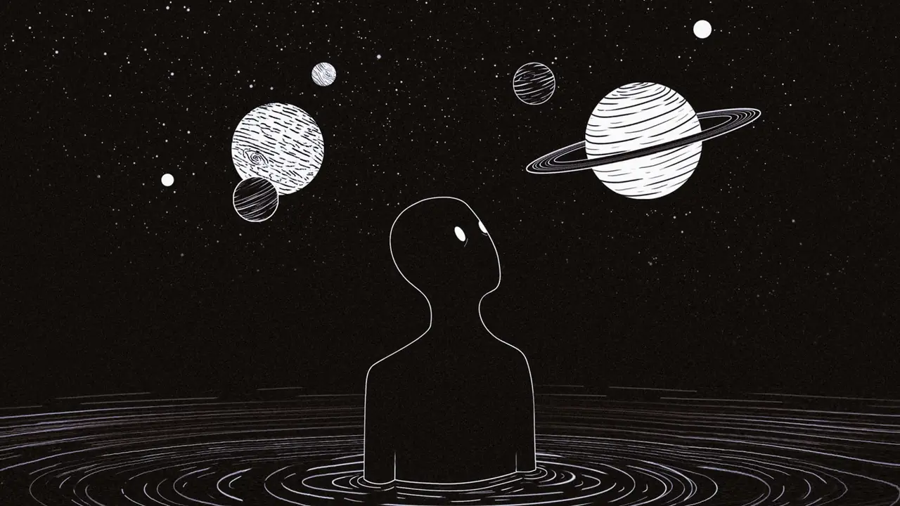

EXPERIMENT 21 · DEPTH BY DRAG
PARALLAX
ARCHIVE
左右拖动。卡片移动一层，照片在裁切框内移动另一层，编号再反向偏移一层。


DRAG THE ARCHIVE
NEXT · 22 / 145Horizontal Scroll↗Drag-driven Parallax Carousel
21 / 145EXPERIMENT 21 · DEPTH BY DRAG
左右拖动。卡片移动一层，照片在裁切框内移动另一层，编号再反向偏移一层。

DRAG THE ARCHIVE
NEXT · 22 / 145Horizontal Scroll↗